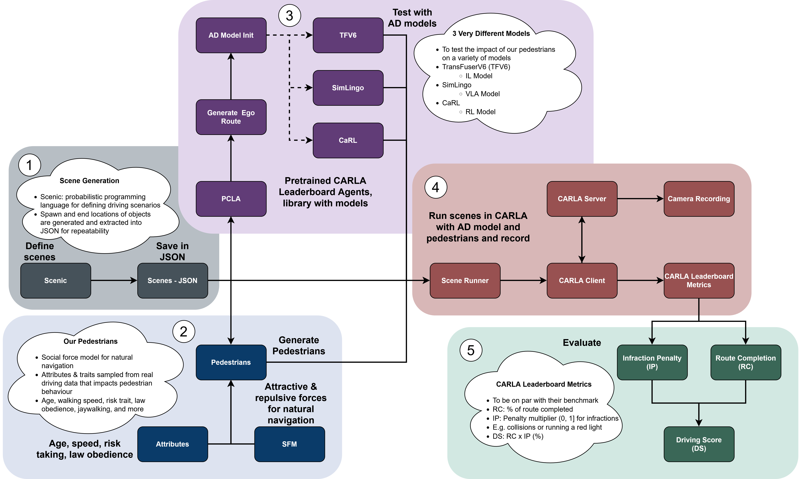

01 - Introduction
This site walks through my summer co-op at the University of Guelph, where I worked on improving pedestrian realism in the CARLA simulator. By the end, you should understand why pedestrian behaviour is a weak point in autonomous driving simulation, what I built to address it, and how it fits into a larger pipeline for training and evaluating AD models.
02 - The Employer
Yulia Kotseruba
Yulia Kotseruba works in computer vision and artificial intelligence, focused on building vision systems inspired by human cognition for autonomous and assistive driving. The team I joined here at the University of Guelph works in this area of artificial intelligence for driving, specifically with vision language models. Do you know that Yulia Kotseruba co-wrote a book which examined more than 3,000 publications? The research by her and her colleagues was based on synthesizing information regarding 80 various cognitive architectures which appeared from the 1950s till now.
03 - Goals & Learning Outcomes
What I set out to learn
Professional & technical communication
Weekly meetings with my supervisor and stand-ups with the research group pushed me to explain my work clearly and ask better questions. I came out of the term much more confident discussing technical ideas out loud.
Understanding the research process
In my first real research role, I learned how to effectively read and critique academic papers, shape a research question, and evaluate different approaches. These are skills that made every part of the project easier as the term went on.
Linux & the research tooling stack
I got comfortable fast with Linux, Python, Git, and CARLA. As well as navigating and extending a large codebase and integrating outside libraries and AD models. I now run Linux as my daily OS by choice.
Building & debugging a full simulation pipeline
I built a complete CARLA pipeline with realistic pedestrians, attachable AD models, and probabilistic scene generation with Scenic. I presented it at team meetings, an undergraduate research poster session, and an undergraduate research talk.
04 - The Project
Closing the sim-to-real gap, one pedestrian at a time
AD models trained purely in simulation often struggle when deployed in the real world. This is a problem known as the sim-to-real gap. One overlooked source of that gap are simulated pedestrians. By default, CARLA's pedestrians walk at a fixed speed along scripted paths, do not react to traffic, and cannot even jaywalk. This is nothing like the mix of cautious, distracted, and impatient people an autonomous vehicle actually has to handle. If an AD model is only ever trained or tested against that, it's being graded on an easy exam.
Fig. 2 - Drag to compare default CARLA pedestrian behaviour against ours
What we added
- Each pedestrian is assigned a type, personality, and law-obedience trait at spawn, sampled from real published distributions, not a single generic walker or random assignments.
- Walking speed, gap-acceptance (time-gap required to cross), and how well their ability to judge oncoming traffic all vary per pedestrian instead of being fixed constants.
- Different kinds of routes reflect that: "obedient" pedestrians use crosswalks, some jaywalk, and "average" pedestrians weigh the detour, and can change their mind and reroute mid-simulation if they've waited too long.
- Crossing decisions are continuous, not one-time: pedestrians keep re-checking traffic while crossing, using real acceleration and speed-limit-aware time-to-collision estimates, and can grow impatient (accepting smaller gaps) the longer they wait.
- Pedestrians react properly to parked/stopped cars and to a vehicle's turn signal and actual curving path. They are able to navigate around stopped cars and mark vehicles turning out of their way as irrelevant
All of this combined replaces one predictable "pedestrian" with a population that behaves the way real crossing decisions actually get made, which is exactly the kind of messiness an AD model needs to be trained and tested against.
The pipeline
By the end of the term, we had a working pipeline where AD models from the CARLA leaderboard can be dropped into CARLA alongside our realistic pedestrians. We chose 3 distinct models with very different architectures for our testing. Under the hood, a data pipeline feeds each vehicle's lane, acceleration, and live speed limit into the pedestrian model every tick with noise applied, so pedestrians are reacting to real traffic conditions rather than a simplified stand-in, letting us train and stress-test AD models against pedestrian behaviour that's much closer to the real world.

Fig. 3 - Pipeline diagram: scene generation + pedestrian & AD model attachment + evaluation
Where things stand
We're currently running experiments to measure how AD model performance, things like collision rate and how cautiously the model drives near pedestrians, changes when it's trained and evaluated against these realistic pedestrians instead of CARLA's defaults. Quantitative results are still being collected, but we expect to see a worse performance on our pedestrians from our starting results.
Writing it up
Alongside the implementation work, I've been reading related research on pedestrian behaviour modelling and sim-to-real transfer, including my supervisor's "Intend-Wait-Cross" pedestrian model our trait system builds on, and drafting a paper on our approach with our pipeline in CARLA. The paper isn't finished yet, but going through that process taught me how to structure an argument, ask better questions, and verify that sources are credible. Most importantly however, it showed me how much of an iterative process research is, it doesn't just happen overnight.
05 - From the Simulator
A closer look
Fig. 4 - Jaywalking pedestrian causes AD model to suddenly brake
Fig. 5 - Pedestrian safely crossing after realizing oncoming traffic is turning
Fig. 6 - Group of crossing pedestrians cause AD model to go outside its lane
06 - Reflection
What this term changed for me
Coming into this term, I hadn't done research work before, by the end, reading papers, forming a hypothesis, and testing it against actual simulation results felt like a normal way to approach a problem rather than something intimidating. I also went from being cautious around a large, unfamiliar codebase to comfortably navigating and extending one.
If I could change one thing, it'd be reading documentation more thoroughly before diving in. I tend to jump straight into a new library or repo and start experimenting, and that usually works, but more than once this term it cost me hours debugging something CARLA's docs or a repo's README had already explained clearly. It's a small habit change, but one I'm taking into every project after this.
More than anything, this term is what convinced me I want to keep working in this space. I'm coming out of it wanting to take more AI/ML coursework going forward and, as it turns out, I get to keep pursuing exactly that.
07 - Conclusion
If there's one thing to take from this site, it's that small, overlooked details, like how a simulated pedestrian decides to cross a street, can be exactly where the gap between simulation and reality hides. My next co-op is back with the same supervisor, in person at the university's DRiVE lab, helping move their existing simulation stack over to CARLA, largely because of the CARLA experience I built this term.
08 - Acknowledgments
Thanks to my supervisor Yulia Kotseruba, her team of research students, and the University of Guelph and their co-op department for their support and guidance throughout this term. Also a big thanks to the University of Guelph and the Natural Sciences and Engineering Research Council of Canada (NSERC) for the funding that made this work term possible for me!
The core of all of this, the photorealistic open-source CARLA simulator for autonomous driving research is available at: CARLA
The inspiration and thought behind pedestrian behaviour modelling was based off my supervisor's previous work: Intend-wait-cross by Amir Rasouli and Yulia Kotseruba
The social force model used for our pedestrians and their navigation was modified and used from: carla-social-force-model by felixlutz
The attachment of AD models in our CARLA simulation and pipeline was modified and used from: PCLA by MasoudJTehrani
The metrics used and reported at the end of our pipeline are directly from the CARLA leaderboard, which code used is available here: scenario_runner by CARLA Team